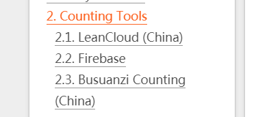
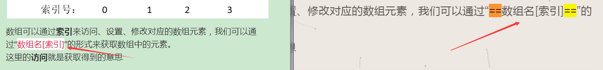

1. Function
1. 添加音乐
http://liangzhikai.cn/2020/07/07/hexo-next%E8%83%8C%E6%99%AF%E9%9F%B3%E4%B9%90/
别人写的资料；
自己还没实验过，所以还没笔记；2020-8-3 06:41:58
这个好像也不错；2020-8-3 06:46:51
2. 文章自定义排序
1.资料网址：
https://blog.csdn.net/stormdony/article/details/86745805
然后设置top，越大，越在前面；http://www.mamicode.com/info-detail-2363262.html
2.修改仓库，使其支持置顶功能
可以直接运行以下命令进行安装：
1
2$ npm uninstall hexo-generator-index --save
$ npm install hexo-generator-index-pin-top --save
3.也许报错
npm uninstall hexo-generator-index –save
后，也许会报错；
是老朋友了；
1 | G:\1-sanciyuan\8-bolg>npm uninstall hexo-generator-index --save |
4.刚开始，我还很在意，想去解决；结果往往会陷入泥潭；
4.1 不过经历过几次换next后，我已经知道，没什么报错是换个next不能解决的
4.2 当时不懂，还以为会损坏hexo；
5.另一种报错
1 | G:\1-sanciyuan\8-bolg>hexo clean |
4.1 把node_modules\hexo-theme-next里的hexo-theme-next删了；
时不时会下载一个hexo-theme-next 到node_modules里面，也不知道为啥；
2. 报错
1.报错：
1 | ERROR { |
2.卸载插件，重新安装，我就好了；2020-11-18 18:46:49
3. 文章访问统计
3.0 用官网的方法
1.重要：next主题配置一定要使用相关的，7.8就用7.8，8.0一定要用8.0的config；
不能因为是next.yml 或者是现在最新版的在博客目录下的_config.next就用以前的文件；
换了主题8.0的config后就有效了；
https://theme-next.js.org/docs/third-party-services/statistics-and-analytics.html#Firebase
好了使用官方的，都散了吧；2020-8-9 11:52:18
2. 步骤:
1.打开官网
2.有三种计数:

2.1 如果选择LeanCloud，会报错：
err: TypeError: serverURL option is required for apps from CN region；
错误：类型错误：来自CN区域的应用程序需要serverURL选项
它要让你验证服务器
2.2 如果你用Busuanzi，下面评论系统的时候又要使用LeanCloud;
所以这里使用3.1 评论的计数；
相关配置去3.1看；
over；
3.如果简单点，不需要评论，只要计数，或者想快点
- 用Busuanzi；
- 可按照官网步骤使用；
3.1 ok，3是错误的，只是像官网那么配置是无效的
- 还是要在某云端申请账号；
- 以后都用
3.1 用评论的计数
3.2 哦，首页没有，文章里面有计数；2020-9-7 03:59:08
4.中间的Firebase没用过；
3.05 以前的失败经历
1.这是没使用0时候的卡关
卡在：
err: TypeError: serverURL option is required for apps from CN region；
LeanCloud自己给的REST API 服务器地址还是报错；看来要自己用域名解析，来配置LeanCloud的API访问域名
0.1 很好，gitee不能被域名解析，要收费；
0.2 只有github速度不行；
0.3 必须要有一个国内的；
0.4 coding可以去试试；2020-8-9 12:11:17
0.5 目前先不去弄了，还有其他事要做；2020-8-9 12:11:37
使用的最下面的 算盘子计数（中国）；2020-8-9 12:42:14
https://cloud.tencent.com/developer/article/1482008
注意：
点击创建Class之后，理论上来说名字可以随意取名，只要你交互代码做相应的更改即可，但是为了保证我们前面对NexT主题的修改兼容，此处的新建Class名字必须为Counter。
counter；英 [ˈkaʊntə(r)] 美 [ˈkaʊntər]
n.(商店、银行等的)柜台;(某些棋盘游戏的)筹码;(电子)计数器，计算器
v.反驳;驳斥;抵制;抵消
adv.逆向地;相反地;反对地但没实验；
本想用：字数统计里面的换行
默认情况下，NexT在单独的行中显示单词计数和估计的阅读时间。您可以通过将in 设置
symbols_count_time.separated_meta为falsein 来将它们添加到一行中主题配置文件。1
2symbols_count_time:
separated_meta: true但是没有效果
1
2
3leancloud_visitors:
enable: true
separated_meta: true在本地访问后，没有回数据；
试试在github那边访问；
4.1 还是没有访问量
连LeanCloud那边也没返回数据，时不时ID和key有错误？
检查看看；
没有问题；
现在也许改版了；不能用了；
网上也找不到教程；
我估计需要配置API访问域名；github的无法连接，gitee等待配置CNAME

但是gitee自己部署的page 是无法配置CNAM的。
这需要一个自己的域名；
我记得我有域名，我去试试；
腾讯云启动；
没有域名over；
百度云启动；
有域名，解析配置：cqilin.gitee.io；
主机记录：@ ；类型：CNAME；解析状态正常；
域名访问：www.meiyao.top 403；
403 Forbidden
对不起，您访问的页面或站点不存在。
管局备案数据同步可能发生延迟，若您的主机已经完成备案或者为无需备案的香港主机，请进入BCH控制面板 > 常用操作 >域名绑定 中解绑并重新绑定域名，并手动刷新主机状态。如果是备案，那就没法了，gitee咋备案；
7.1 是不是绑定域名出错？百度 gitee域名配置，无果，居然说无法配置；
失败告终；2020-8-9 10:50:37 ；问问其他人；
-
没有效果；
默认就是：visitor: false
https://blog.csdn.net/Hodors/article/details/103979281
使用文章中的第二种方法
未实验，2020-8-9 11:13:47
试试？
1
2
3
4
5
6
7
8# Another tool to show number of visitors to each article.
# Visit https://console.firebase.google.com/u/0/ to get apiKey and projectId.
# Visit https://firebase.google.com/docs/firestore/ to get more information about firestore.
firestore:
enable: false
collection: articles # Required, a string collection name to access firestore database
apiKey: # Required
projectId: # Required
实在不行，还有google这边访问统计；2020-8-9 11:15:03https://leaferx.online/2018/02/11/lc-security/
这个网址里有
部署云引擎以保证访客数量不被随意篡改；未实验与使用
博客配置文件_config.yml ；其他都没有，就你有…
由于Leancloud免费版的云引擎存在请求线程数和运行时间限制以及休眠机制，很多时候访客数量加载会很慢。如果设置
betterPerformance为true，则网页则会在提交请求之前直接显示访客人数为查询到的人数+1，以增加用户体验。已经在next配置中添加；2020-8-9 11:31:08
https://blog.qust.cc/archives/48665.html
又是一个；更新与2020-06-22的
写得是最详细的；只不过，危险的地方很多
3.1 用评论的计数；
用官方的计数，会卡在：err: TypeError: serverURL option is required for apps from CN region；
1.1 它要让你接服务器；
评论系统那边有计数功能，不需要服务器连接；
1
2
3
4
5
6
7
8
9
10
11
12
13
14valine:
enable: true
appId: l9X7oYVrse5t6umGkFbQyhXs-gzGzoHsz # Your leancloud application appid
appKey: dcwRazDbDakW6HdC3xERrYHu # Your leancloud application appkey
placeholder: Just go go # Comment box placeholder
avatar: mm # Gravatar style
meta: [nick, mail, link] # Custom comment header
pageSize: 10 # Pagination size
language: # Language, available values: en, zh-cn
visitor: true # Article reading statistic
comment_count: true # If false, comment count will only be displayed in post page, not in home page
recordIP: true # Whether to record the commenter IP
serverURLs: # When the custom domain name is enabled, fill it in here (it will be detected automatically by default, no need to fill in)
#post_meta_order: 0其中第十行：
visitor: true # Article reading statistic就是控制计数的；2.2 翻译：
访客：正确＃文章阅读统计
3.2 问题：计数被刷新为0
1.不过昨天遇到一个问题，计数和评论被刷新了；
2.我不知道1.的昨天是哪一天，可惜我没记录时间；2020-9-6 12:07:40
不过今天又遇到了；2020-9-6 12:07:49
它被刷新的依据是什么？
我的去那边看看，LeanCloud，是记录次数的。
计数是有的，而且在对着本地与gitee的数据时，我发现了url不同

3.也许是我改了blog的_config.yml
- 我改了永久链接permalink:
- blog的url改变了
3.1 为什么修改了永久链接
- 因为：文章7-1.4；
4.是url改变的原因吗？
- 不清楚，但目前只有这么猜想了
- 不会后端的无奈
4. 评论系统
重要：next主题配置一定要使用相关的，7.8就用7.8，8.0一定要用8.0的config；
不能因为是next.yml 或者是现在最新版的_config.next就用以前的文件；
换了主题8.0的config后就有效了；
官方：https://theme-next.js.org/docs/third-party-services/comments.html#Valine
2020-8-9 12:42:42
评论要新建class-Comment；

- comment，英 [ˈkɒment] 美 [ˈkɑːment] ；n.议论;评论;解释;批评;指责；v.表达意见
3.同时，计数也需要新建class，否则无法计数；
- counter：计数；
5. 动态背景；
5.1 让next8.0-canvas_next 有效；
https://www.dazhuanlan.com/2019/12/09/5dedf5666dc17/
1.1 在这个网站上 https://github.com/theme-next/theme-next-canvas-nest 的README.md清楚地给出了next的背景动态使用：
- 进入
themes/next/source/lib路径,输入$ git clone https://github.com/theme-next/theme-next-canvas-nest source/lib/canvas-nest - 在next的
_config.yml修改canvas_nest: true - 回到themes/next/source/lib/canvas-nest文件夹，git bash：
git pull hexo cleanhexo ghexo s就可以预览了。
最后那个语言问题，并不是next官网和google的一堆信息都是把languages改成zh_Hans，这是无效的，需要在站点配置文件_comfig.yml中把languages改成zh_CN。
1.2 languages那些不管，以前就经历过，zh_Hans早已被官方删除，只有zh_CN
1.3
themes/next/source/lib这个路径下确实没有canvas-nest文件；1.4 不过lib里面的似乎和博客目录下的node_modules 不同；
它可以直接复制；于是在：
G:\1-sanciyuan\8-bolg\source\lib 目录下复制了canvas-nest文件夹；
到：G:\1-sanciyuan\8-bolg\themes\next2-8.0\source\lib 下；
没有效果；
1.5 文章原话：当然这个方法我也试过了，不行。还是得重新找方法，最后还是使用修改_layout.swig奏效。方法就是在里面加入
1
2
3{% if theme.canvas_nest %}
<script type="text/javascript" color="0,0,0" opacity='0.5' zIndex="-1" count="150" src="//cdn.bootcss.com/canvas-nest.js/1.0.0/canvas-nest.min.js"></script>
{% endif %}1.6 有效；
不过next8.0，文件后缀名改变；变为：.njk
位置在：G:\1-sanciyuan\8-bolg\themes\next2-8.0\layout
- 进入
删除
themes/next/source/lib下的canvas-nest文件夹，看是否还有效果；有效，既然有效那就删了；
删除next配置文件里的：
1
2
3
4
5
6
7
8
9# 自己添加
canvas_nest: # 网络背景
enable: true
onmobile: true # display on mobile or not
color: '0,0,0' # RGB values, use ',' to separate
opacity: 0.5 # the opacity of line: 0~1
zIndex: -1 # z-index property of the background
count: 150 # the number of lines
# 自己添加可以得出结论到底是_layout.njk在控制，还是上面主题配置里控制着
有效，
确定是_layout.njk在控制 可不可以让线条更多一点？这也是3的目的，为了改变效果，要找准控制的地方；
翻译上面的:
1
2
3
4
5onmobile:true？是否在移动设备上显示
color:'0,0,0'#RGB值，使用''分隔
不透明度：0.5#线条的不透明度：0~1
zIndex:-1#背景的z索引属性
计数：150行调整：count，增加线条次数为200条；
虽然文章里面给的，没有
onmobile: true，但添加试试；让移动设备上面能看到也好；使用相同的格式：onmobile=”true”调整 opacity为0.7；加深颜色；
我最想的是增加粗细，既然里面没有，那先不乱添加；
over；实验开始；先在cmd里ctrl+c，免得报错；2020-8-10 03:36:59
有效 ,虽然没有调整线条的粗细，但也许减少了透明度，看起来也粗了一些；count调整有效，比较后，线条肉眼可看的增加了；
onmobile=”true” 有效，至少在F12的移动查看中有效
很好
5.2 qilin_meiyao_luka 没效
emm，奇怪的地方出现了；
第二个hexo这样配置后，没效果；2020-8-10 16:29:47
5.1 难道是要 hexo g ？
没效；
5.2 把 这个添加了试试
1
2
3
4
5
6
7
8
9# 自己添加
canvas_nest: # 网络背景
enable: true
onmobile: true # display on mobile or not
color: '0,0,0' # RGB values, use ',' to separate
opacity: 0.5 # the opacity of line: 0~1
zIndex: -1 # z-index property of the background
count: 150 # the number of lines
# 自己添加效…效果出现？？？
什么？什么情况？这不就和上面第三个冲突了？
5.3 再删除试试？是不是因为5.2 把
1
2
3
4
5{% if theme.canvas_nest %}
<script type="text/javascript" color="0,0,0" opacity='0.5' zIndex="-1" count="150" src="//cdn.bootcss.com/canvas-nest.js/1.0.0/canvas-nest.min.js"></script>
{% endif %}激活了？
删除后，没了效果？怎么回事？
难道这里是看next主题配置里的 canvas_nest 配置？
5.4 那把 _layout.njk 里的
1
2
3
4
5{% if theme.canvas_nest %}
<script type="text/javascript" color="0,0,0" opacity='0.5' zIndex="-1" count="150" src="//cdn.bootcss.com/canvas-nest.js/1.0.0/canvas-nest.min.js"></script>
{% endif %}删除实验；
无？？无效？
怎么这里两个都要了？
怎么G:\1-sanciyuan\11-qilin_meiyao_luka 这个博客要两边都要配置？
而：8-blog 学习博客就不用？
lib里的 canvas-nest 一样，主题配置更是从8-blog复制的；
只有config不一样；不对，hexo的config那么少，对照一下就能看出哪里不一样；
对照 hexo的config
- 一样；
- emm，没有法子。实现只能到此为止了
以后若 光有 _layout.njk 里的配置，而没有效果
就把next主题配置里的 canvas_nest 加上试试；
6. 改变高亮颜色
0.注意：
- 如果是中文输入法，====不会马上有效，需要删除一个=号，在给一个=号。
- 如果是英文输入法，马上生效.
网上所说：
https://blog.csdn.net/tl4832194/article/details/107921933
1.位置：
C:\Users\Administrator\AppData\Roaming\Typora\themes
2.这是自己找到过一次了，最开始在这：
- 在typora左上角文件里面
- 偏好设置
- 外观
- 打开主题文件夹；就是上面的路径；
3.正文：
- mark是找不到的，自己添加
1 | mark { |
不知道border-bottom干嘛，说是字体颜色，也没有变化；虽然知道代码意思是下边框，但删除后又没啥变化
- 注释说是字体颜色，我嗯是不信，也确实不是；
难道要把 0px 改为 1px？
我没有多想，直接改为：
1 | mark { |
backgorund是背景色，如果不修改，默认是黄色
而且：修改为：#fafafa，居然有灰色；
就换成255，255，255（也是white）
没有灰色；
依然有效；
6.2 next主题不解析
1.如图所示：

2.目前没找到法子；2020-10-8 00:53:44
3.可用<red></red>代替，已经在styles.styl文件中修改；
1 | red { |
10. 淘宝镜像npm→cnpm
安装：
安装：命令提示符执行
npm install -g cnpm --registry=[https://registry.npm.taobao.org](https://link.jianshu.com?t=https://registry.npm.taobao.org)；
注意：安装完后最好查看其版本号cnpm -v或关闭命令提示符重新打开，安装完直接使用有可能会出现错误；
注：cnpm跟npm用法完全一致，只是在执行命令时将npm改为cnpm（以下操作将以cnpm代替npm）。
作者：lMadman
链接：https://www.jianshu.com/p/22ca76100155
来源：简书
著作权归作者所有。商业转载请联系作者获得授权，非商业转载请注明出处。
自己已安装；

下载预览：

- cnpm下载东西的格式与npm不一样
- 同时 查看cnpm版本时
- 还有显示npm的版本
- node的版本
- npminstall的版本
10.1 问题
1.同时目录下，也多一个文件夹：

1.3 先看看下载的东西有没有效果；2020-9-7 04:09:56
1.4 没有下载出hexo-theme-next，还不错，免得我去删了；
- 用npm切换淘宝镜像下载依赖包，不会有这个问题
2.同时，还下载了很多其他的东西
在我
cnpm install --save hexo-blog-encrypt时，发生的；2020-9-9 17:54:50
- 下面还有，没有截图了，不过全部把这种_开头的删了，hexo s 也不报错；
10.2 npm切换淘宝镜像下载依赖包
设置：https://blog.csdn.net/qq_16683689/article/details/89376577
1.好像是说cnpm有很多坑，但又没说清楚
2.上面下载两个文件，也许是其中之一，没有试验；2020-9-9 17:41:37
3.还有人说：漏掉依赖（目前不懂）
4.npm get registry，可以查看镜像地址；
设成淘宝的镜像
npm config set registry http://registry.npm.taobao.org/
11. 修改页面字体
预览：

next/_config.yml
1 | font: |
12. 跳转到其他笔记；
12.1 蒙对；
由这个和：
https://cqilin.github.io/typescript/26-typescript_introduction/
https://cqilin.github.io/typescript/5-ts_first_item/
而感得出，跳转文件；
[转移到了 5-ts first item](../5-ts_first_item/#10-项目：下棋游戏)都在typescript文件下，那先返回上一级：../
然后是5-ts_first_item ：../5-ts_first_item
但这样是无法跳转的；然后早就知道图上①处的地方。但是之前没观察②处
这次看了②处，才知道是url发生了改变；正好有#定位，用之

12.2 发现分类规则
笔记：4-css_个人笔记-6. 水平垂直居中；有更多解析；
这里的跳转：../4-css_private_note/#6-水平垂直居中
没有效果；
使用：../../css/4-css_private_note/#6-水平垂直居中
才有效；
当初：
先../4-css_private_note/#6-水平垂直居中
结果跳转的是：
http://localhost:4000/html-css/4-css_private_note/#6-水平垂直居中
而正确链接是：
这让我发现了分类；
因为12.md本身分类于：html_css (url里面变成了html-css)
原来上次1-typescript_introduction-10.项目：下棋游戏；是蒙对的
他们正好都是分类于typescript
怎么办了？既然是在css下面，那么这样行吗？
../css/4-css_private_note/#6-水平垂直居中
跳转的是：
http://localhost:4000/html-css/css/4-css_private_note/#6-水平垂直居中
还是在html-css下面，仍然是错误链接；
怎么办？
没有概念，没有原理；只有实验；
我突发奇想，百度相对连接；
找到../../
../../ 代表上两级目录
实验链接：
../../4-css_private_note/#6-水平垂直居中
链接是：http://localhost:4000/4-css_private_note/#6-水平垂直居中
没有css；
我一度迷茫；
没有发现，这次摆脱了html-css/的束缚；
过了一会，我发现了；
于是，我加上css/实验；
实验链接为：../../css/4-css_private_note/#6-水平垂直居中
成功；
跳转到了：
12.3 发现permalink
1.permalink才是关键之一
2.它构成了url的路径定位；
13. 进度条
1.上面会有一个条，根据页面的进度
<../img src=”http://bucket-c70.test.upcdn.net/8/5.png" alt=”5” style=”zoom:110%;” />
2.官网
https://theme-next.js.org/docs/third-party-services/external-libraries.html#Progress-Bar
3.配置：
next/_config.yml
1 | pace: enable: true |
14. 滚动百分比
14.1 预览：
<../img src=”http://bucket-c70.test.upcdn.net/8/6.png" alt=”8” style=”zoom:80%;” />
在左下角
14.2 配置
1.在官网上没找到
2.百度
打开
themes/next/_config.yml,搜索关键字scrollpercent,把false改为true在next.yml文档里，代码的样子是：
1
2
3
4
5
6back2top:
enable: true
# Back to top in sidebar.
sidebar: false
# Scroll percent label in b2t button.
scrollpercent: true # 滚动百分比
3.同时，这个箭头（返回最上边）
也是back2top：enable：true 就有了；
15. 主题添加留言
15.1 预览

15.2 步骤：
1.首先，next主题的_config.yml里面是没有的；
- 自己加:
guestbook: /guestbook/ || fa fa-comment #留言
1.1 加在哪？
1 | menu: |
2.然后要在languages文件夹里面的zh-Hans.yml文件，menu子项中添加：
guestbook: 留言- 不然显示的是 guestbook;
3.完毕；
16. 刷新页面-实现加载效果
16.1 预览

16.2 步骤：
1.打开主题配置
- 我的主题配置是
next.yml - 我的路径：G:\1-sanciyuan\8-bolg\source_data
- 这是一种设置，这里不讲这个
- 正常情况是，主题目录下的_config.yml
2.找到pace
1 | pace: |
把them修改为loading-bar;
over;2020-9-7 03:57:17
17. 文章界面透明
17.1 预览：
1.首页文章页面处，透明，能看到背景动态图像

2.点击文章里面，也能看到；

17.2 实现步骤
1.激活主题配置文件里的custom_file_path: style
1 | custom_file_path: |
2.在source/_data/目录下，创建styles.styl
我的目录是：G:\1-sanciyuan\8-bolg\source_data

3.刚开始里面是空白的，什么都没有
- 是这样的
4.修改.post-block.animated.fadeIn
1 | .post-block.animated.fadeIn { |
4.1 用0.2进行透明
5.这不是当时找的时候做的笔记；
- 所以，为什么修改这个类？
- 怎么找打的这个类？
5.1 具体过程我忘记了
- 印象中，肯定是从F12开始
- 但总觉得没这么简单
6.over；2020-9-7 04:36:14
18. 文章加密
资料：https://zhuanlan.zhihu.com/p/113235573
- 这个有一些注释，和插件来源：https://www.jianshu.com/p/44e211829447
18.1 按标签加密
- 修改文章信息头如下：
1 | title: Hello World |
- 对博客根目录_config添加如下字段：
18.2 toc加密
1.什么是toc？
- 好像是目录，文章目录。例如：https://yelog.org/2019/09/24/3-hexo-toc/
- 百度：hexo toc，也有相关信息
2.需要额外配置：
如果您有一篇文章使用了TOC，您需要修改模板的部分代码。这里以matery主题作为示例：
- 在hexo/themes/matery/layout/_partial/article.ejs找到article.ejs。
- 然后找到<％post.content％>这段代码，通常在30行左右。
- 使用如下的代码来替代它：
1 | <% if(post.toc == true){ %> |
…
2.1 我在 G:\1-sanciyuan\8-bolg\themes\next2-8.0\layout_partials 目录下没找到啊
- 是我版本的问题吧？以前旧版本有？
- 是我主题问题吗？我这里是next主题，上面教程是matery主题？
- 总之不了了之；
2.1.5 应该是不是一个主题的原因
- 作者是想举这个例子，让其他主题使用者，要对着修改自己的主题
- 而我这种不懂其中原理的，就没法举一反三；2020-9-10 05:18:56
2.2 找不到，也没法，先hexo s 本地试试如何；2020-9-9 18:28:45
18.3 问题：
18.3.1 没有目录
1.文章里面的目录没有，就是toc配置
2.但是没有效果，即使找到next主题的配置
3.没有版本，只有放弃这个方法，另寻加密方法；
4.找到个网页：https://yuyuforest.com/2018/10/18/encrypt-toc/
- 有相关问题，但是很久以前的版本；2020-9-10 05:56:26
- 文章来源：https://github.com/MikeCoder/hexo-blog-encrypt/issues/58
4.1 看了许久的网页；
根据网页中的最终的解决方案
我把
<section class="site-overview-wrap sidebar-panel{% if not display_toc or page.encrypt == false and toc(page.content).length <= 1 or page.encrypt == true and toc(page.origin).length <= 1 %} sidebar-panel-active{% endif %}">替换了：

还是没有效果，我应该放弃了；
18.4 方法二-简单法
1.https://www.jianshu.com/p/44e211829447
2.然后简单的方法…密码错了，也可以进，
- 而且还是没toc，我也是醉了；2020-9-9 20:54:38
19. next配置文件重置位置
https://theme-next.js.org/docs/getting-started/configuration.html
2. hexo or next config
1. 搜索
之前用的不是这个方法，插件名称也不是这个；少了db；
hexo-generator-search；忽然没了搜索功能，去官网看，又觉得陌生；可惜之前没做笔记；想不起了
本地搜寻
本地搜索不需要任何外部第三方服务，并且可以由搜索引擎额外索引。建议大多数用户使用此搜索方法。
-
hexo-generator-searchdb通过执行以下命令来安装站点根目录：1
$ npm安装hexo-generator-searchdb
-
Edit site config file and add following content:
1
2
3
4
5
6hexo/_config.yml
search:
path: search.xml
field: post
format: html
limit: 10000 -
Edit theme config file to enable Local Search:
1
2
3
4
5
6
7
8
9
10
11
12
13
14next/_config.yml
# Local search
# Dependencies: https://github.com/next-theme/hexo-generator-searchdb
local_search:
enable: true
# If auto, trigger search by changing input.
# If manual, trigger search by pressing enter key or search button.
trigger: auto
# Show top n results per article, show all results by setting to -1
top_n_per_article: 1
# Unescape html strings to the readable one.
unescape: false
# Preload the search data when the page loads.
preload: false
2. next配置文件重置位置
https://theme-next.js.org/docs/getting-started/configuration.html
3. 页脚修改
3.1 可能会用于又拍云领取；
https://www.upyun.com/league；领取免费额度与存储空间
4. 归档页面页数
4.1 在hexo的配置中
1 | # Pagination |
- 大概第85行
4.2 首页一页文章数
1 | # Home page setting |
- 大约56行
如果添加了新的东西，行数都会变化；2020-9-12 10:57:29
3. npm’s order
1. 卸载插件
1 | npm uninstall <你的插件名> |
一般都我是在blog_博客目录下用的npm命令；